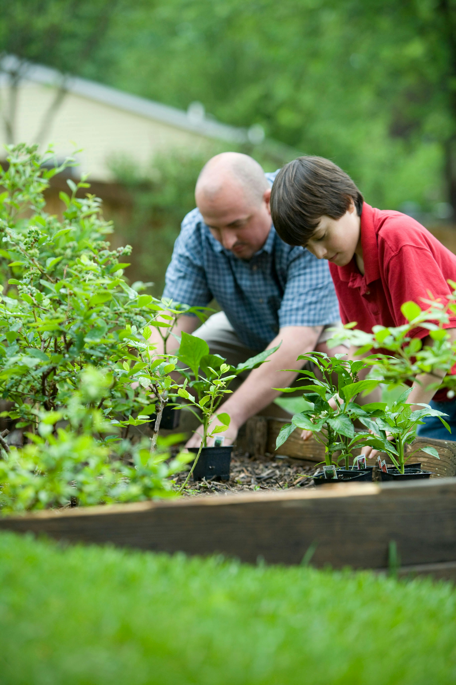
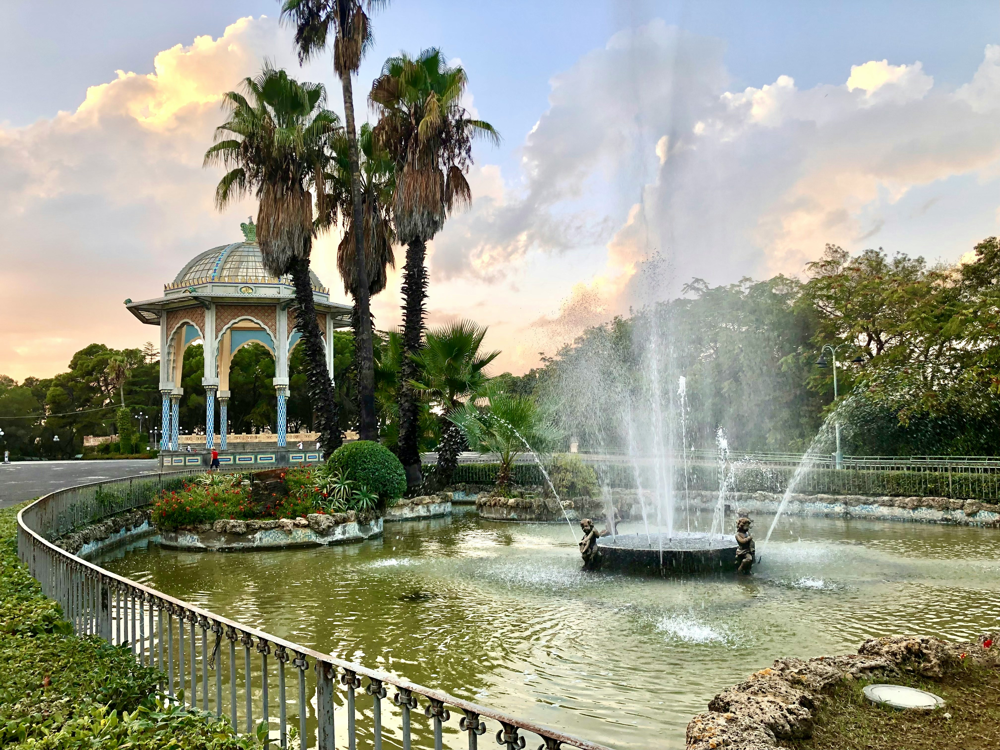
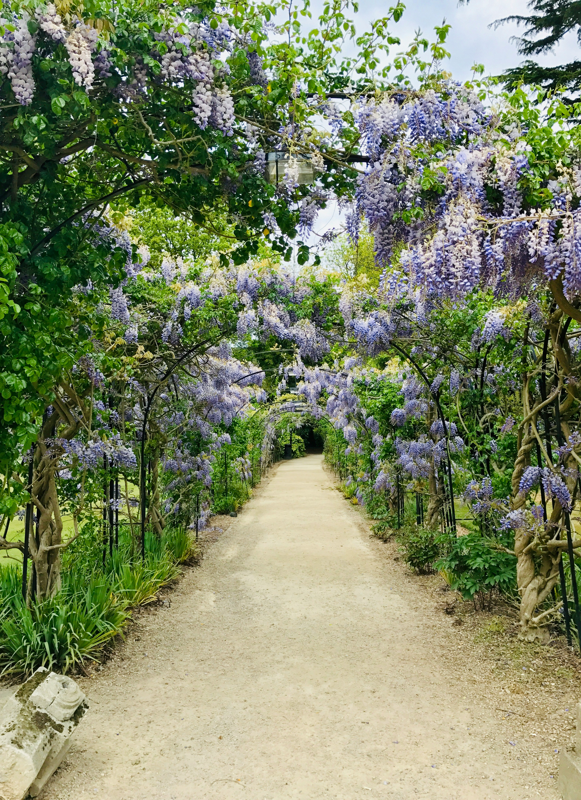

Il nostro negozio online di prodotti per il giardinaggio
Indice
- Semi
- Attrezzi
- Fertilizzanti
- Attrezzature per l'irrigazione
- Decorazioni per il giardino

Il nostro negozio online di prodotti per il giardinaggio
Il nostro negozio online offre una vasta gamma di semi di alta qualità per piante e fiori, tra cui semi di ortaggi, semi di erbe aromatiche e semi di piante da giardino. Offriamo anche un'ampia selezione di attrezzi di alta qualità per il giardinaggio, tra cui rastrelli, cesoie, vanghe, tagliasiepi e molto altro ancora. Forniamo una vasta gamma di fertilizzanti per piante e fiori, tra cui fertilizzanti organici e chimici, e abbiamo anche un'ampia selezione di attrezzature per l'irrigazione, tra cui tubi da giardino, irrigatori, spruzzatori e molto altro ancora. Inoltre, abbiamo una sezione dedicata alla decorazione del giardino, con fontane, statue e ornamenti per piante. Siamo appassionati del nostro lavoro e ci impegniamo a fornire prodotti di alta qualità ai nostri clienti. Offriamo anche consigli e suggerimenti per aiutare i nostri clienti a creare un giardino unico e personalizzato.

Semi
Il nostro negozio online offre una vasta gamma di semi di alta qualità per piante e fiori, tra cui semi di ortaggi, semi di erbe aromatiche e semi di piante da giardino. Siamo sempre alla ricerca delle ultime varietà e offriamo anche semi biologici e non trattati chimicamente.
Perché scegliere i nostri semi?
Ogni seme che offriamo è selezionato con cura per garantire la massima qualità e la massima probabilità di germogliazione.
Che siate interessati a fiori colorati, ortaggi succulenti o piante aromatiche, abbiamo una vasta gamma di semi per ogni esigenza e gusto.
Forniamo inoltre istruzioni chiare e dettagliate su come seminare e prendersi cura delle vostre piante, rendendo il processo di giardinaggio accessibile anche ai principianti.
Il nostro team è qui per rispondere a tutte le vostre domande e offrire consigli e suggerimenti per garantire il successo del vostro giardino.
Cosa offriamo:
Dalle classiche rose ai vivaci girasoli, abbiamo una vasta selezione di semi per creare un giardino floreale splendente.
Coltivate i vostri ortaggi freschi e biologici direttamente dal vostro giardino con i nostri semi di alta qualità.
Aggiungete un tocco di freschezza alle vostre ricette con le nostre erbe aromatiche, coltivate direttamente a casa vostra.
Rendete il vostro spazio verde un'oasi di bellezza con le nostre piante ornamentali, ideali per decorare balconi e giardini.
Esplorate la nostra collezione e iniziate il vostro viaggio nel meraviglioso mondo del giardinaggio oggi stesso!

Attrezzi
Offriamo un'ampia selezione di attrezzi di alta qualità per il giardinaggio, tra cui rastrelli, cesoie, vanghe, tagliasiepi e molto altro ancora. Siamo sempre alla ricerca delle ultime tecnologie e materiali per offrire ai nostri clienti i migliori prodotti.

Fertilizzanti
Forniamo una vasta gamma di fertilizzanti per piante e fiori, tra cui fertilizzanti organici e chimici. Ci assicuriamo di offrire solo prodotti di alta qualità, con una grande attenzione alla sostenibilità e alla sicurezza per l'ambiente e la salute umana.

Attrezzature per l'irrigazione
Abbiamo anche un'ampia selezione di attrezzature per l'irrigazione, tra cui tubi da giardino, irrigatori, spruzzatori e molto altro ancora. Offriamo prodotti di alta qualità e garantiamo che i nostri clienti trovino tutto ciò di cui hanno bisogno per l'irrigazione del loro giardino.

Decorazioni per il giardino
Abbiamo una sezione dedicata alla decorazione del giardino, con fontane, statue e ornamenti per piante. Siamo appassionati del nostro lavoro e ci impegniamo a fornire prodotti di alta qualità ai nostri clienti. Offriamo anche consigli e suggerimenti per aiutare i nostri clienti a creare un giardino unico e personalizzato.

Contattateci se avete domande o necessitate di assistenza. Siamo qui per voi!
© 2023 Il nostro negozio online di prodotti per il giardinaggio. Tutti i diritti riservati.